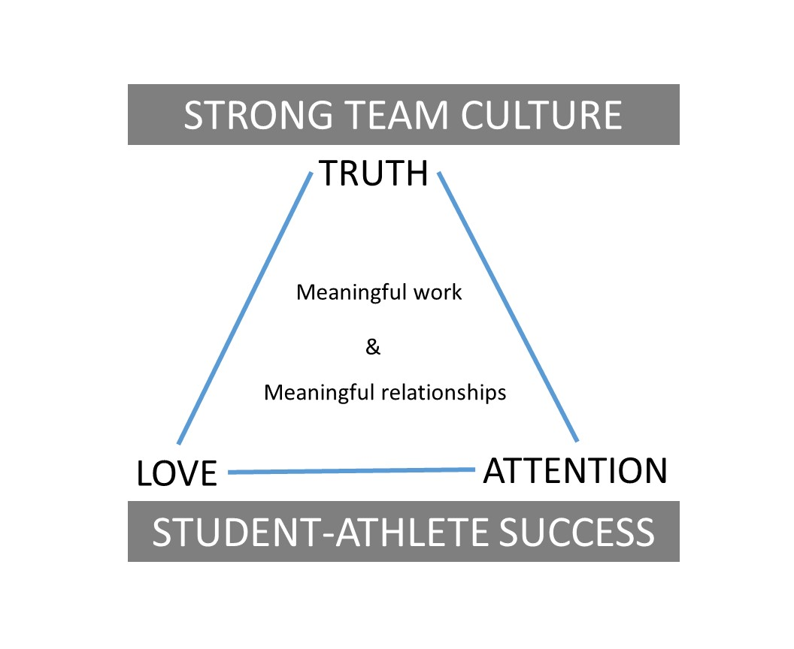

My Coaching Philosphy
Everyone has their "one quote" that they live by. Mine is this one, from Super-Bowl-winning head coach Tony Dungy:
The secret to success is good leadership, and good leadership is all about making the lives of your team members better.
This is what drives me, and this is why I got into coaching: to help make the lives of my team members better.
With Coach Dungy's quote as my guiding light, I developed my coaching philosophy to help chart the course for my coaching journey. Its purpose is to (1) articulate my goals, and (2) let you know how I plan to achieve those goals.
In one sentence, my coaching philosophy is:
I aim to foster student-athlete success by building a strong team culture where the goals are meaningful work and meaningful relationships achieved through core values of truth, love, and attention.
The details of this coaching philosophy can be found below:
I aim to foster Student-Athlete Success
- Success is defined as improvement over time, i.e. "success is a journey".
- Success includes "the whole person", not just the athlete.
- Athletic success occurs alongside academic success.
By building a Strong Team Culture
- We put the team's goals before our own.
- We have fun competing together.
- Learning through failure is celebrated and encouraged.
Goal #1: Meaningful Work
- We become a true team on a mission together.
- Practices are challenging and engaging.
- The work brings out our best selves.
Goal #2: Meaningful Relationships
- We value our relationships more than we value our win-loss record.
- We stick by each other through thick and thin.
- We want what's best for one another.
Core Value #1: Truth
- We put our honest thoughts on the table; we are transparent with each other.
- We both envy and strive to maintain individual integrity.
- We believe that having individual integrity leads to mutual trust which provides an optimal environment for improvement over time.
Core Value #2: Love
- We strive to respond in a loving fashion no matter the situation.
- We treat others the way we want to be treated.
- We celebrate each other's successes.
Core Value #3: Attention
- We value the ability to pay attention above all other skills.
- We stay curious about the things that will make us better.
- We focus on things that other teams normally take for granted, which gives us a competitive edge.
my Coaching Philosophy in One Picture:
I aim to foster student-athlete success by building a strong team culture where the goals are meaningful work and meaningful relationships achieved through core values of truth, love, and attention.
Further reading:
The above summarizes by coaching philosophy. If you'd like to learn more, I do maintain a more comprehensive document of the "Principles" I live by which can be found View Principles Document.
Thanks for reading, and please let me know if you have any thoughts or feedback!